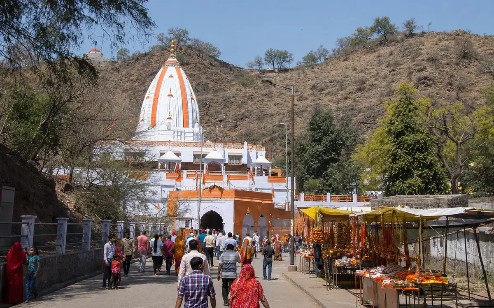

Agra To Mehandipur Balaji TaxiSame-Day Darshan By Private AC Cab
110–120 KM Via The Jaipur Highway
2.5–3 Hrs Each Way · Waiting Included

The Two Things That Decide This Day
How early you leave, and how long the queue is. Darshan here can take two hours or four depending on the day, which is why a meter or an hourly rate would be the wrong way to buy this trip. You get one fare for the whole day, the car waits at the temple parking regardless, and your bags stay locked inside while you are in.
Agra To Mehandipur Balaji Taxi At A Glance
110–120 KM
From Agra, Dausa District
2.5–3 HRS
Each Way By Cab
2–4 HRS
Typical Darshan Time
5:30 AM
Suggested Pickup
Taxi Fare From Agra To Mehandipur Balaji
We do not publish a starting price for this route. Darshan length, your cab and your pickup point all move the number, so we quote per trip rather than post one that changes when you ask.
| Cab Type | Seats | Same-Day Round Trip | One Way |
|---|---|---|---|
| AC Sedan (Dzire / Amaze) | 4 | Fare on WhatsApp | Fare on WhatsApp |
| AC SUV (Ertiga) | 6 | Fare on WhatsApp | Fare on WhatsApp |
| AC SUV (Innova Crysta) | 7 | Fare on WhatsApp | Fare on WhatsApp |
| Tempo Traveller | 12–15 | Fare on WhatsApp | Fare on WhatsApp |
Your fixed fare covers fuel and driver charges for the full day, including waiting during darshan. Highway tolls on the Agra–Mahwa stretch, Rajasthan state tax where applicable, and temple parking are paid by you at actuals — usually a few hundred rupees in total, and we tell you the expected amounts on WhatsApp before you book. See the full Agra taxi fare list for the routes we do publish prices for.
Your Journey
The Road, And Where You Stop On It
110 to 120 km from Agra, just off the Agra–Jaipur highway, at 2.5 to 3 hours each way.
- Agra Pickup from any Agra address
- Mehandipur Balaji Dausa district, Rajasthan
110–120 km
From Agra, Dausa district
2.5–3 hrs
Each way by cab
- The temple is in Dausa district, Rajasthan, just off the Agra–Jaipur highway.
- Your cab takes the highway past Fatehpur Sikri and the Bharatpur bypass, then exits near Mahwa for the short approach road into the temple town.
- The road is good for most of the way — 2.5 to 3 hours each way, depending on traffic and your pickup point.
- Pickup from any Agra address — hotel, home, Agra Cantt, Agra Fort station or Kheria Airport.
- Your driver can stop at a highway dhaba for tea, breakfast or a washroom break. Just say so — extra stops cost nothing.

A Same-Day Plan That Works
Times shift with the queue. This is the shape of the day most customers book.
- 5:30 am — pickup from your Agra hotel or home.
- 6:30 am — optional tea or breakfast stop on the highway.
- 8:30 am — arrive at the temple; your driver parks and waits.
- 8:30 am – 12:00 noon — darshan at your own pace, typically 2 to 4 hours depending on the day.
- 12:30 pm — lunch stop on the highway; your driver suggests clean options.
- 3:30–4:00 pm — optional stop at Fatehpur Sikri on the way back, if darshan finished early.
- 5:00–6:00 pm — drop back at your Agra address.
- Want a later start, an overnight stay, or Kaila Devi added? Tell us and we adjust the plan and quote one fare.
What The Day Covers
Shri Mehandipur Balaji Temple
A Hanuman temple known across India, and the reason most people make this drive. It is open daily; Tuesdays, Saturdays and Hanuman Jayanti draw the largest crowds. Allow 2 to 4 hours depending on the day and the queue.
The Temple Town
Devotees often also visit the smaller shrines inside the complex and in the surrounding lanes. Your driver waits at the parking for as long as you need within the booked day.
A Note For First-Time Visitors
Mehandipur Balaji has long-standing customs of its own — most notably, devotees do not carry prasad home from this temple, and traditionally do not look back at it when leaving. Our drivers run this route regularly and will quietly point out the customs, the parking and where to leave footwear.
 Optional Return Stop
Optional Return Stop
Fatehpur Sikri — optional
Akbar’s abandoned capital, with the towering Buland Darwaza, sits right on your return route to Agra. If darshan finishes early, a 1 to 1.5 hour stop is easy to add — tell your driver in advance so the parking is planned. We also run it as a day trip in its own right.
Clear Fare Breakdown
What Your Booking Includes
One cab and one driver for the whole day, at a price agreed before you leave Agra.
Included In The Fare
- Private AC Cab For The Full Day
- Fuel And Driver Charges
- Waiting At The Temple Parking, Throughout Darshan
- Belongings Locked In The Car While You Are Inside
- Door-To-Door Agra Pickup And Drop
- Driver Name, Number And Car Number Before Pickup
Paid Separately By You
- Highway Tolls On The Agra–Mahwa Stretch
- Rajasthan State Tax, Where Applicable
- Temple Parking
- Meals And Offerings
Why Families Book This Route With Us
Drivers Who Run This Road
They know the correct parking, the temple-town lanes, and how Tuesdays and Saturdays change the crowd — which is what decides your pickup time.
Early Pickups, Any Day
4:30 am or 6:00 am, you choose. We run every day of the year including Hanuman Jayanti.
Waiting Is In The Fare
However long darshan takes within the booked day, there is no waiting charge added at the end.
Comfortable For Elders
Many of these bookings are parents and grandparents. The driver helps with boarding and luggage, and we plan tea and washroom breaks on the highway — extra stops cost nothing.
The Extras Told Upfront
Tolls, Rajasthan state tax and parking are named and estimated on WhatsApp before you book, not discovered on the road.
Driver Details Before Pickup
Name, mobile number and car registration number come through before the car arrives. Match the plate before you board.
How Booking Works
01 — Send Your Trip Details
Travel date, passengers, pickup point in Agra, and whether you want Kaila Devi or Fatehpur Sikri added.
02 — Fixed Fare Confirmed
Confirmed in writing on WhatsApp, including the expected toll, state tax and parking amounts, so you know the full cost before you say yes.
03 — Driver Details Shared
Name, mobile number and car registration number before pickup — match the plate before boarding. No app, and no advance for most bookings.
Making It A Two-Temple Circuit
Kaila Devi near Karauli can be added to the same day, making a Rajasthan circuit of roughly 350–380 km over about 12 to 13 hours. It is a long day, and it only works with an early start — but it is a common booking, and we will tell you honestly whether your timings allow it.
Karauli + Kaila Devi + Balaji
Both temples in one planned day, or the relaxed two-day version with a night halt in Karauli.
Fare on WhatsAppAgra to Kaila Devi Temple
The Shakti temple near Karauli on its own, approx. 170 km and 3.5–4 hrs each way.
Fare on WhatsAppRajasthan Temple Tour Planner
Compare every Rajasthan route, or plan a longer multi-day yatra.
One-day to multi-dayLocal Agra Operator
Your Local Travel Partner In Agra
Padma Shree Travels operates from Shamsabad, Agra, running local sightseeing, station and airport transfers, pilgrimage trips and outstation routes. Every pilgrimage route we run is listed on the temple tours hub, Braj and Rajasthan together.
- Your fare Fares are confirmed on WhatsApp before you travel, with tolls, Rajasthan state tax and parking identified separately.
- Your driver Your driver’s name, mobile number and car registration number are shared before pickup.
- Pickup and drop Pickup from any Agra address — hotel, home, Agra Cantt, Agra Fort station or Kheria Airport — and drop back at the same place.
Direct WhatsApp and phone support before and during your trip.
.jpg)
Agra To Mehandipur Balaji — Questions & Answers
How far is Mehandipur Balaji Temple from Agra?
Mehandipur Balaji Temple is approximately 110 to 120 kilometres from Agra, in Dausa district, Rajasthan. By private taxi via the Agra-Jaipur highway the drive takes about 2.5 to 3 hours each way.
What is the taxi fare from Agra to Mehandipur Balaji?
We do not publish a fixed starting price for this route. A same-day round trip is available in an AC sedan (Dzire or Amaze), with Ertiga, Innova Crysta and Tempo Traveller available for families and groups. The fare covers fuel, the driver and waiting during darshan. Highway tolls, Rajasthan state tax where applicable, and temple parking are extra at actuals and told to you before booking. Message us on WhatsApp for today’s fixed fare.
Can we go to Mehandipur Balaji from Agra and return the same day?
Yes, comfortably. With a 5:30 to 6:00 am pickup from Agra you reach the temple by around 8:30 am, get three to four unhurried hours for darshan, and are back in Agra by 5:00 to 6:00 pm.
Will the driver wait while we do darshan?
Yes. Your driver parks at the temple parking and waits for as long as darshan takes within the booked day. There are no extra waiting charges, and your luggage stays locked in the car.
Which days are busiest for Mehandipur Balaji darshan?
The temple is open every day. Tuesdays and Saturdays are considered the most auspicious for Balaji and draw the largest crowds. If you are travelling on those days or on Hanuman Jayanti, book your cab 2 to 3 days in advance and take the earliest pickup you can manage.
Can we combine Kaila Devi Temple with Mehandipur Balaji in one day?
Yes. Kaila Devi Temple near Karauli can be added to make a two-temple Rajasthan circuit of roughly 350 to 380 km. It is a long day of about 12 to 13 hours but very doable with an early start. See our Karauli, Kaila Devi and Balaji tour page for the full plan and fare.
Is the cab suitable for senior citizens?
Yes. For elderly passengers we suggest the Innova Crysta for its easier boarding and softer ride on the longer Rajasthan stretch. The driver assists with boarding and luggage, and we plan tea and washroom breaks around your comfort rather than the clock.
Is it spelled Mehandipur or Mehndipur Balaji?
You will see both spellings, Mehandipur Balaji and Mehndipur Balaji, along with simply Balaji Temple, Rajasthan. They all refer to the same Hanuman temple in Dausa district, and we run cabs there from Agra daily.
Other Temple Routes From Agra
Temple Tours From Agra
Every pilgrimage route we run, Braj and Rajasthan, in one place.
View pilgrimage routesAgra to Karauli Taxi
Madan Mohan Ji Temple and the City Palace, with a Kaila Devi add-on.
Fare on WhatsAppAgra to Mathura Taxi
Krishna Janmabhoomi, Dwarkadhish and the ghats.
From ₹1,500 one wayMathura, Vrindavan & Barsana
The three-town Braj day, 10–12 hours out of Agra.
₹3,500 full dayFatehpur Sikri Day Trip
Akbar’s abandoned capital, a UNESCO World Heritage Site — also on this route home.
From ₹2,500Full Agra Taxi Fare List
Every route and package we run, with fares in one table.
All faresPlanning Balaji Darshan?
Fare in writing. Waiting included. Extras told upfront.
Send your travel date, how many are coming and your pickup point — we confirm the fare, the expected tolls and tax, and a pickup time that gets you there before the queue builds.
Free cancellation up to 12 hours before departure.